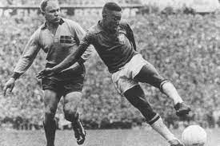

6.ª edición
Debut de Pelé (17 años)
Copa Mundial de la FIFA Suecia 1958
8 de junio – 29 de junio de 1958
País sede: Suecia 🇸🇪
16 selecciones
35 partidos
Datos generales del torneo
- País sede: Suecia 🇸🇪
- Ciudades sede: Estocolmo, Gotemburgo, Malmö, Norrköping, Helsingborg, Uddevalla, Eskilstuna
- Estadios: 12
- Selecciones participantes: 16
- Partidos jugados: 35
- Goles anotados: 126
- Campeón: Brasil 🇧🇷
- Subcampeón: Suecia 🇸🇪
- Tercer lugar: Francia 🇫🇷
- Cuarto lugar: Alemania Federal 🇩🇪
- Máximo goleador: Just Fontaine (🇫🇷, 13 goles – récord histórico)
- Mejor jugador: Pelé (17 años)
Jugadas y momentos destacados
Suecia 1958 es recordado por el surgimiento de Pelé, quien con solo 17 años
deslumbró al mundo y llevó a Brasil a su primer título mundial.
También fue el torneo del récord eterno de Just Fontaine con 13 goles.

Resumen del torneo
-
Brasil conquistó su primer título mundial demostrando fútbol ofensivo y creativo,
con Pelé y Garrincha como sus nuevas estrellas.
-
El joven Pelé anotó un hat-trick en semifinales contra Francia y dos goles en la final.
-
Suecia, anfitriona, sorprendió al alcanzar la final, guiada por Nils Liedholm y Kurt Hamrin.
-
Just Fontaine marcó 13 goles para Francia, récord que se mantiene hasta hoy.
-
Fue la única Copa Mundial jugada íntegramente en Europa del Norte.
Fase final (últimos 4)
Semifinales
- 🇸🇪 Suecia 3–1 Alemania Federal 🇩🇪
- 🇧🇷 Brasil 5–2 Francia 🇫🇷
Tercer lugar
- 🇫🇷 Francia 6–3 Alemania Federal 🇩🇪
Final
Selecciones participantes por grupo
Grupo A
- 🇸🇪 Suecia
- 🇲🇽 México
- 🇭🇺 Hungría
- 🇬🇧 Gales
Grupo B
- 🇫🇷 Francia
- 🇾🇺 Yugoslavia
- 🇵🇾 Paraguay
- 🇸🇦 Arabia Saudita
Grupo C
- 🇧🇷 Brasil
- 🇷🇺 Unión Soviética
- 🇬🇧 Inglaterra
- 🇦🇹 Austria
Grupo D
- 🇩🇪 Alemania Federal
- 🇦🇷 Argentina
- 🇨🇭 Suiza
- 🇮🇹 Italia
Final: Brasil vs Suecia
El 29 de junio de 1958 en el Estadio Råsunda (Estocolmo),
Brasil venció 5–2 a Suecia con doblete de Pelé,
ganando su primera Copa Mundial y dando inicio a una dinastía histórica.
Brasil 🇧🇷 – Alineación titular
- DT: Vicente Feola
- Gilmar (POR)
- Djalma Santos
- Bellini (C)
- Orlando
- Nílton Santos
- Zito
- Didi
- Garrincha
- Vavá
- Zagallo
- Pelé
Suecia 🇸🇪 – Alineación titular
- DT: George Raynor
- Kalle Svensson (POR)
- Börje Leander
- Orvar Bergmark
- Sven Axbom
- Bengt Gustavsson
- Nils Liedholm (C)
- Sigvard Parling
- Kurt Hamrin
- Agne Simonsson
- Gunnar Gren
- Lennart Skoglund
Reseña general
La Copa Mundial Suecia 1958 marcó el inicio de la era Dorada del fútbol brasileño
y el ascenso meteórico de Pelé como futuro mejor jugador del mundo.
El torneo mostró fútbol ofensivo y talentos legendarios como Fontaine, Garrincha y Liedholm.
Fue también el único Mundial donde los cuatro equipos británicos participaron juntos.